上海市冷岛网络演变
2015 — 2025
进行中 · 网络分析
地理信息科学 · 上海
我研究热在哪里聚集、廊道在哪里断开、修复该从哪里开始。
继续向下
同一套投影，三个尺度：从国土，到城市群，到一条街。



上海在长江入海口。季风、平原、密集的人口，决定了它夏天的热不是偶然。
往近处看，水域与建成区交替出现。冷源不是孤岛，它们被水系与绿带串成网络。
再近一步，是这 3 公里。我的大部分数据，从这里开始。
做完一步，就把它挪到上面去。
采集、清洗、地点归属、主题分类、情感、建模，拆成 13 个能单独跑的步骤。
定下三期影像、三套阻力面、三类瓶颈指标，以及一条归因路径。
项目仓库与这个站点上线。只公开说明与代码，论文、图件与数据留在本地。
影像与土地覆被入库，做地表温度、植被与水体指数，先把「冷源在哪」落成一张可靠的栅格。